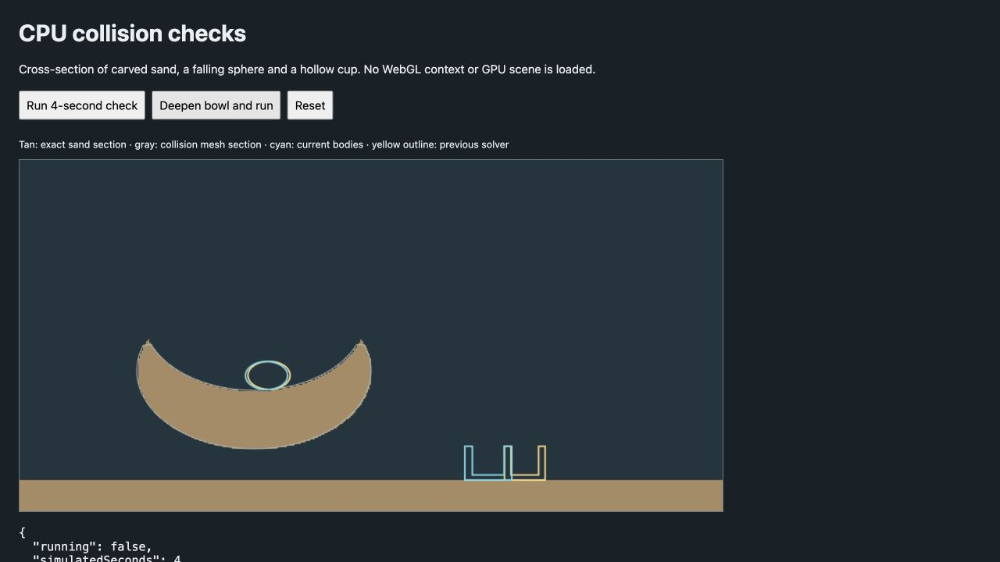

CPU-only collision work, against revision 1d3ae7a. These measurements cover the object solver, not whole-scene FPS or total simulation throughput. Rendering and the particle-water solver are unchanged. No full WebGL scene or GPU stress test was opened.
Fixed 1/120-second steps, 30 warmup steps then 150 measured steps; settled cups have an additional 120 settling steps. All four fixtures use calm air and no water force. Previous and current paths use identical initial geometry and mass. This is one local run; timing varies with background load.
| Fixture | Previous mean ms | Current mean ms | Mean speedup | p95 ms |
|---|---|---|---|---|
| settled cups | 35.25 | 0.45 | 77.57× | 43.50 → 0.73 |
| busy falling spheres | 10.26 | 2.02 | 5.07× | 35.22 → 2.82 |
| touching spheres | 10.85 | 1.86 | 5.84× | 17.37 → 2.34 |
| edited terrain | 1.20 | 0.28 | 4.35× | 7.50 → 0.37 |
There are 24 cups, 120 separated falling spheres, 24 touching spheres, and 12 bodies with 360 carved sand parcels respectively. The edited-terrain fixture primarily measures avoiding distant work; it is not an isolated mesh test. Its median is slightly slower even though mean and p95 improve. Sleeping accounts for most of the large calm-cup speedup. In the four fixtures the maximum final center difference is 1.80 mm at their 10 m/unit scale.
A separate moving sphere in a carved bowl, with sleeping disabled and the existing exact CSG bricks active, measured 0.78 → 0.73 ms/step. Earlier runs were approximately neutral or slightly slower: the mesh is not the main source of the overall gains. Repeated normal queries measured 56.96 → 33.36 ms for 5120 queries.
Normals are approximated on smooth faces, so rolling trajectories can differ: the bowl's final center differs by 27.7 mm. Final penetration queries remain exact; cups remain hollow. An upright cup now uses a symmetric contact resultant on a parallel plane, preventing artificial sideways drift from sequential impulses.
A conservative cached boundary field rejected 32367 of 40000 candidate queries while preserving all contact counts. It took 23.84 ms versus 53.78 ms for the existing exact bricks (2.26×). Mesh/field construction took 957.21 ms in this run and runs off the main thread in the live scene. This field experiment is not enabled in the water pressure solver: its benefit needs a separate end-to-end pressure benchmark and conservation checks. More work on reusable contact manifolds and sleeping is better supported by the current measurements than replacing all SDF queries with meshes.
tests/sand-drops-rigid.test.js:115 also fails on the unchanged base revision (CPU object contacts expected, JavaScript CPU returned).Reproduce: node --test tests/live-rigid-physics.test.js, node tests/live-rigid-benchmark.mjs, npm run build. CPU preview · Raw results
